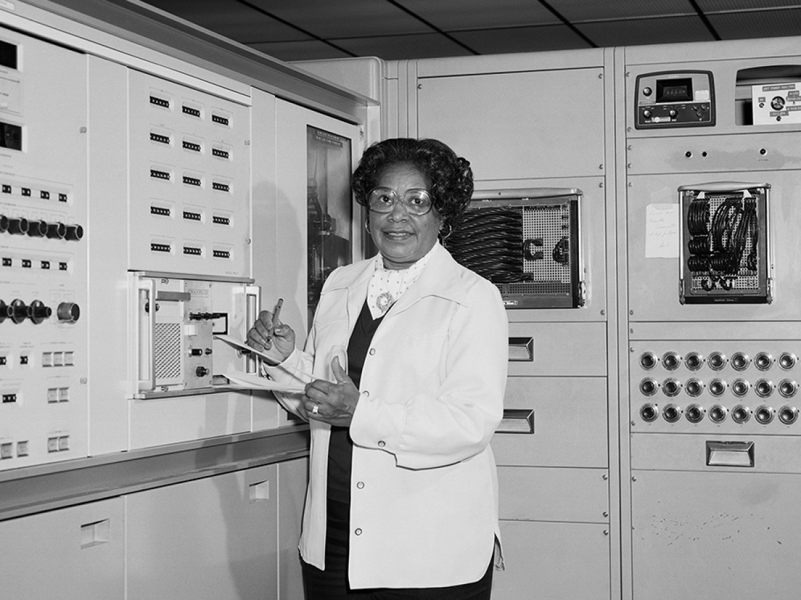

Dorothy Johnson Vaughan, nascida em Kansas City, 1910, foi matemática graduada pela Wilberforce University.
Durante seus 28 anos de carreira na NASA, foi chefe de um grupo de trabalho formado apenas por mulheres negras e matemáticas, e tornou-se a primeira supervisora negra.
Autodidata, especializou-se na linguagem de programação FORTRAN, e por isto liderou a seção de programação da Divisão de Análise e Computação do Langley Research Center. Não é coisa pouca! Quem nunca sonhou em ser programadora na NASA? A Dorothy realizou essa tarefa e participou de projetos muito importantes.
Além disso, ela também é uma das mulheres destacada na história Estrelas Além do Tempo (Hidden Figures) que foi lançado nos cinemas.